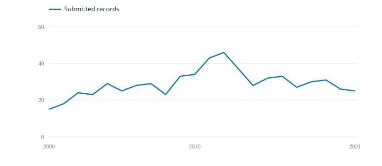

639 submitted public aggregate records · 2000–2021.

Records per year
Sample of submitted rows
| Record | Year | Fleet | Cell | Quarter | Hooks | Fish (number) |
|---|---|---|---|---|---|---|
| wcpfc_ll_row_44348 | 2000 | FJ | 15S_175E | 1 | 539205 | 9159 |
| wcpfc_ll_row_44349 | 2000 | FJ | 20S_170E | 1 | 497154 | 10770 |
| wcpfc_ll_row_44350 | 2000 | FJ | 20S_175E | 1 | 2885989 | 37424 |
| wcpfc_ll_row_44655 | 2000 | FJ | 15S_175E | 2 | 1067388 | 21140 |
| wcpfc_ll_row_44656 | 2000 | FJ | 20S_170E | 2 | 891215 | 26606 |
| wcpfc_ll_row_44657 | 2000 | FJ | 20S_175E | 2 | 2751718 | 51152 |
Each row combines fleet, five-degree cell, quarter and year; vessel IDs are unavailable.
First six rows shown.